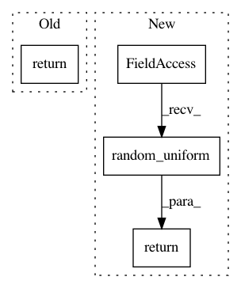

70cf20f6cf5e21c3b6165067483b925db61c161c,deepmedic/neuralnet/ops.py,,applyDropout,#Any#Any#Any#Any#Any#Any#,29
Before Change
inputImgAfterDropout = inputTrain
inputImgAfterDropoutInference = inputInference
inputImgAfterDropoutTesting = inputTesting
return (inputImgAfterDropout, inputImgAfterDropoutInference, inputImgAfterDropoutTesting)
def applyBn(rollingAverageForBatchNormalizationOverThatManyBatches, inputTrain, inputVal, inputTest, inputShapeTrain) :
numberOfChannels = inputShapeTrain[1]
After Change
keep_prob = (1-dropoutRate)
random_tensor = keep_prob
random_tensor += tf.random_uniform(shape=inputTrainShape, minval=0., maxval=1., seed=rng.randint(999999), dtype="float32")
// 0. if [keep_prob, 1.0) and 1. if [1.0, 1.0 + keep_prob)
dropoutMask = tf.floor(random_tensor)
// tf.nn.dropout(x, keep_prob) scales kept values UP, so that at inference you dont need to scale then.
inputImgAfterDropoutTrain = inputTrain * dropoutMask
inputImgAfterDropoutVal = inputVal * keep_prob
inputImgAfterDropoutTest = inputTest * keep_prob
else :
inputImgAfterDropoutTrain = inputTrain
inputImgAfterDropoutVal = inputVal
inputImgAfterDropoutTest = inputTest
return (inputImgAfterDropoutTrain, inputImgAfterDropoutVal, inputImgAfterDropoutTest)
def applyBn(rollingAverageForBatchNormalizationOverThatManyBatches, inputTrain, inputVal, inputTest, inputShapeTrain) :
numOfChanns = inputShapeTrain[1]
In pattern: SUPERPATTERN
Frequency: 3
Non-data size: 4
Instances
Project Name: Kamnitsask/deepmedic
Commit Name: 70cf20f6cf5e21c3b6165067483b925db61c161c
Time: 2018-06-17
Author: konstantinos.kamnitsas12@imperial.ac.uk
File Name: deepmedic/neuralnet/ops.py
Class Name:
Method Name: applyDropout
Project Name: keras-team/keras
Commit Name: e94a6641dccda6dd7f8ad86fad82e62388548777
Time: 2021-01-06
Author: scottzhu@google.com
File Name: keras/initializers/initializers_v2.py
Class Name: RandomUniform
Method Name: __call__
Project Name: keras-team/keras
Commit Name: 7c84229f350b83ce397b8c65e52e333e99b6d19d
Time: 2019-03-04
Author: francois.chollet@gmail.com
File Name: keras/backend/tensorflow_backend.py
Class Name:
Method Name: random_uniform